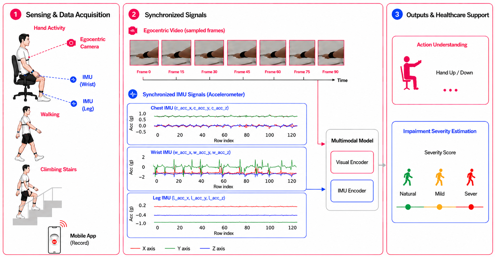
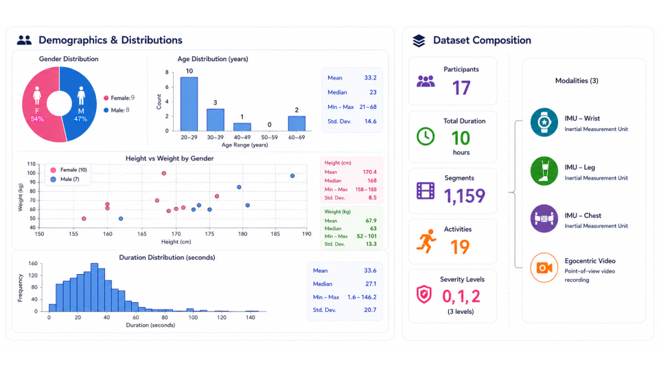

Egocentric Video
- Wearable first-person RGB camera
- Approximately 150 RGB frames per clip
- MP4 / H.264 encoding
- 720p resolution (1280x720)
- Temporally sampled for video transformers

Research Benchmark
A Multimodal Egocentric Video and Inertial Dataset for Motor Impairment Analysis
Benchmarking first-person vision and wearable sensing for movement impairment understanding.

EgoInertia-MI provides synchronized egocentric RGB video and wearable IMU streams for movement analysis and motor impairment severity estimation. The benchmark is designed for multimodal learning under controlled, reproducible protocols and includes standardized train/validation/test partitions.
The dataset emphasizes simulated impairment levels, wearable sensing, privacy-aware first-person vision, and practical multimodal evaluation. It does not replace clinical datasets collected from real patients; instead, it offers a scalable and accessible benchmark for studying multimodal movement analysis in controlled settings.
Traditional clinical assessments are often intermittent and subjective. Existing vision-based approaches rely heavily on third-person cameras in controlled environments, frequently involving full-body or facial recordings. These conditions can introduce privacy concerns, reduce ecological validity, and complicate real-world deployment.
Egocentric sensing enables naturally privacy-aware observations while capturing self-motion dynamics that are directly relevant to motor analysis. EgoInertia-MI investigates whether egocentric video encodes meaningful cues for impairment analysis and whether fusion with synchronized IMU signals improves performance.

Each video clip has a corresponding aligned IMU file with the same identifier.
EgoInertia-MI-video/
│
└── P0001/
└── video/
└── P0001_S1/
├── P0001_S1_V01.MP4
├── P0001_S1_V02.MP4
└── ...EgoInertia-MI-IMU/
│
└── P0001/
└── aligned_IMU/
└── P0001_S1/
├── P0001_S1_V01_aligned.csv
├── P0001_S1_V02_aligned.csv
└── ...
├── LICENSE
├── README.md
└── benchmark_protocols.pdfVideo: EgoInertia-MI-video/P0001/video/P0001_S1/P0001_S1_V01.MP4
Aligned IMU: EgoInertia-MI-IMU/P0001/aligned_IMU/P0001_S1/P0001_S1_V01_aligned.csv
Identifier format: PXXXX_SY_VZZ
Standardized train/validation/test splits, metadata files, and benchmark protocols are provided.
Each aligned IMU CSV contains synchronized wearable inertial signals with 19 columns:
rel_time_s,
w_acc_x, w_acc_y, w_acc_z,
w_gyro_x, w_gyro_y, w_gyro_z,
l_acc_x, l_acc_y, l_acc_z,
l_gyro_x, l_gyro_y, l_gyro_z,
c_acc_x, c_acc_y, c_acc_z,
c_gyro_x, c_gyro_y, c_gyro_zw = wrist, l = leg, c = chest.
acc = tri-axial acceleration, gyro = tri-axial angular velocity.
rel_time_s is the relative timestamp in seconds.
The annotation CSV is semicolon-separated and captures clip metadata, labels, and notes.
VidID;Path;HandInVideo;SensorsSideWristLeg;Action;Severity;ClassID;duration_s;notesTask 1
Predict the performed activity from video-only, IMU-only, and multimodal fusion inputs.
Task 2
Estimate impairment severity levels from multimodal movement dynamics.
Protocols include unimodal baselines, multimodal fusion baselines, and standardized evaluation settings.

Placeholder benchmark tables summarize modality comparison, unimodal versus multimodal performance, and task-specific outcomes.
| Model | Video | IMU | Fusion |
|---|---|---|---|
| Baseline A | TBA | TBA | TBA |
| Baseline B | TBA | TBA | TBA |
| Baseline C | TBA | TBA | TBA |
| Model | Macro-F1 | MAE |
|---|---|---|
| Video-only | TBA | TBA |
| IMU-only | TBA | TBA |
| Multimodal | TBA | TBA |
Current trend placeholder: multimodal fusion consistently improves results, while egocentric video alone provides strong predictive cues.
TBA
Egocentric RGB + Multi-sensor IMU
See LICENSE file in release package
Please cite EgoInertia-MI when using the dataset in publications.
@inproceedings{egoinertia_mi_2026,
title = {EgoInertia-MI: A Multimodal Egocentric Video and Inertial Dataset for Motor Impairment Analysis},
author = {Author List},
booktitle = {Conference Name},
year = {2026},
url = {https://placeholder.url}
}The benchmark includes volunteer participants performing simulated impairment behaviors under approved study protocols. The design follows privacy-aware egocentric acquisition principles and is intended for research benchmarking, not direct clinical diagnosis.
EgoInertia-MI is a non-clinical benchmark and should be interpreted within that limitation. Ethical use, attribution, and adherence to the dataset license are required.
We thank all participants, annotators, and collaborators who contributed to the data collection and benchmark development process.